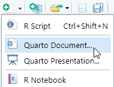
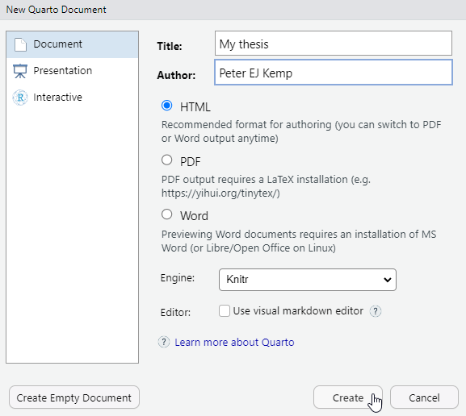
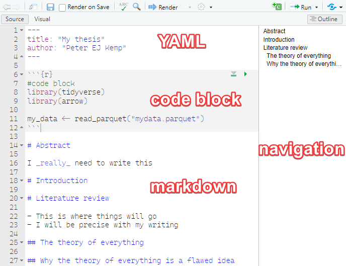
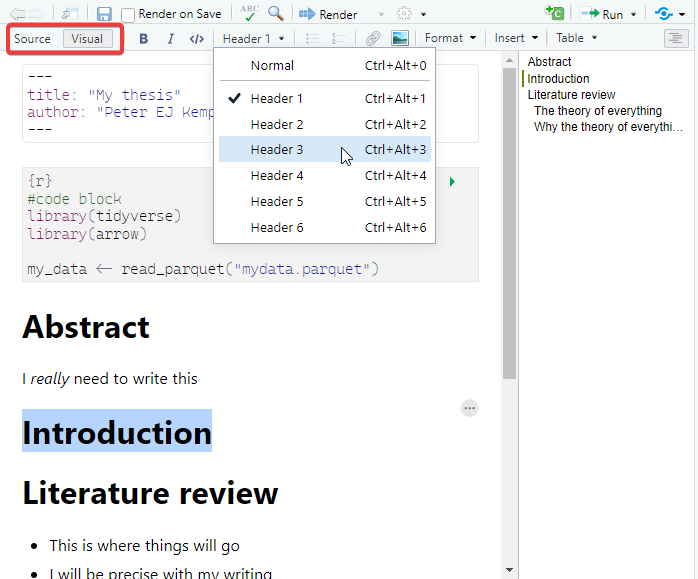
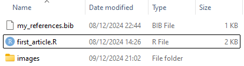
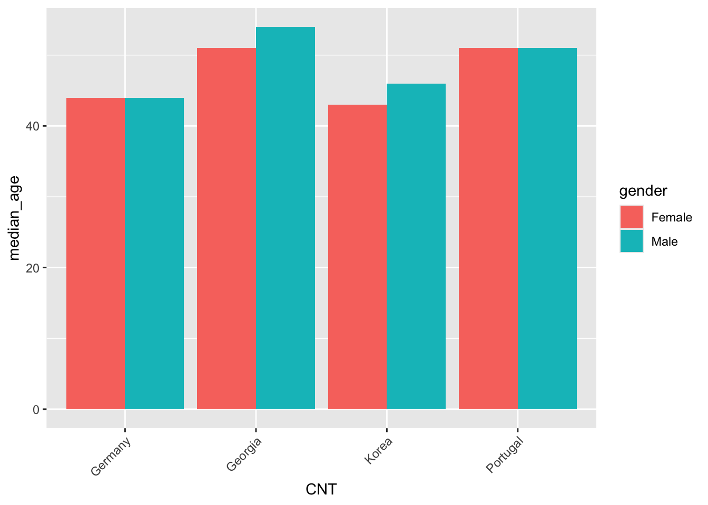

[1] 2Publishing using R and quarto
1 Why Quarto
Quarto is a publishing framework that works with R and RStudio (and python and Julia) to allow you to produce pdfs, word docs, websites and power points for publication. Using quarto you can combine your data cleaning, data analysis, model building and graph creation, with your writing and bibliography, all in one place. This means
- you don’t need to keep copy and pasting, or exporting results and graphs from R to your write up
- if the underlying data sets or models change any changes automatically filter through to your write up
- it’s easy to include the code that you use so readers can see exactly what you have done
Quarto also allows you to present your findings alongside your R code. This allows for better reproducibility of work and transparency in terms of methodology.
2 Creating your first quarto file
- create a new quarto document from the drop down

- fill in some basic details (you can edit these later), keep the default as HTML (a web page)

- You will be presented by an empty .qmd file
- Save this file where you want to work on it
2.1 The structure of a quarto file
A quarto file has three main components,
the YAML block at the top of the .qmd page allows you to specify metadata about the work, including authors, affiliations, type of output (e.g. HTML or pdf), the title, the date, license information, referencing style, location of the bibliography file etc. The YAML block needs to come at the top of the page and is delimited by the three dashes
---at the beginning and three dashes---at the end of the YAML blockcode blocks - quarto files allow you to intermix code blocks with text, you can define how quarto handles these blocks, e.g. displaying/hiding the code, suppressing warnings, or stopping the code block executing. More on this below
markdown - this is the text and image output of your work. Markdown offers . Whilst not as fully featured as a word processor Markdown allows you to create work with simple text formatting, tables, image manipulation, links and references. For more complex formatting you can inline HTML/CSS and latex code.

2.2 Visual editor
RStudio comes with a built in what you see is what you get (WYSIWYG) visual editor for quarto files. You can toggle between the source/text view and the visual editor at the top left of the editor. Most things you can do in the source editor can be replicated in the Visual editor, though the markdown produced can sometimes be messy, especially when dealing with hand made tables.

3 Markdown
3.1 Basic formatting
You can write a .qmd file much like you would write a plain text document, but it does also allow basic formatting using a language called markdown. Markdown lets you have text that is **bold**, *italic*and <u>underlined</u>, it allows for linking actions, such as hyperlinks to webpages through [webpages](https://en.wikipedia.org/wiki/Main_Page)
### This is sub header
#### This is an even smaller header
For something that might be less important, you can have multiple levels of subheading by adding more #s, for example ##### would be a level 5 heading, the more #s you have the smaller the heading.
3.2 Lists
If you need to create lists
- this is a list
- of bullet pointed
- created by
- items, which can be
- indented with four spaces
- before the hyphen `-`- this is a list
- of bullet pointed
- created by
- items, which can be
- indented with four spaces
- before the hyphen
-
You can also have:
1. numbered lists
2. by using numbers followed by
3. bullet points
4. You can embed [links](https://stackoverflow.com/questions/73066792/how-to-create-lettered-lists-using-quarto) in lists- numbered lists
- by using numbers followed by
- bullet points
- You can embed links in lists
3.3 Inserting images
If you have images that you would like to include in your writing you can insert them by using :

Make sure that your images are in the images/ folder and that the address you use includes the image type, here it is .jpg in images/brock.jpg. Try to give your images sensible names or place the images for your chapter in a sub folder of the images folder, e.g. images/chpt4/amy.jpg.
You can adjust the size and location of the image by using the curly brackets { } and setting the width, fig-align etc:
{width="10%" fig-align="left"}
If you’re including images you are likely to want to reference them. Quarto allows you to use links to images within your text. First, you will need to give your image a label, this is done by adding #fig-<name> to the end of the image line. Note, you need a hyphen - following the word fig, you can’t use an underscore or anything else. For example:
{width="10%" fig-align="left" #fig-brock}
You can now reference the image in your text using the @ symbol followed by the label, for example @fig-brock. This will automatically create a link to the image in the text and give the figure a number:
You can see a picture of Richard in @fig-brock, where the image is aligned to the left and is 10% of the page width.
You can see a picture of Richard in Figure 3.1, where the image is aligned to the left and is 10% of the page width.
Find out more about using figures in the quarto documentation
3.4 Questions: intro to markdown
Create a new .qmd file to output html. Include:
- YAML with a
title:andauthor: - a header
- a sub header
- a list
- italic, bold and underlined text
- create a folder of images in the same location as your .qmd file
- add an image
- render your file using the button
- adjust the width of the image and it’s alignment
- add a reference to the image in the text (remember the
#fig-label and the@reference) - experiment with the
Visualeditor - Extension: add multiple rows of images by looking at the quarto documentation and the lightbox class
3.5 Quotes and references
If someone has said something interesting, you can block quote them by using the right arrow > quote goes here.
Dirt glitters as long as the sun shines. – Goethe
If you want to find out more about how to format your writing in quarto take a look at one of the helpsheet or the help website
When writing you might want to add academic references to your quarto document. This is very straight forward using `bibtex` - a structured way of recording references. You can find bibtex entries for most academic references through the Google scholar cite menu:

You can also hand-craft your own references if you can’t find them online.
You need to add this reference to a .bib file, you can do this by creating a new file in the same folder as your .qmd file and calling it my_references.bib. You then need to go to the YAML block at the top of your .qmd file and add the line # bibliography: my_references.bib. This tells quarto where to look for your references file.
---
title: "My Thesis"
author: "Peter EJ Kemp"
# bibliography: my_references.bib
---
The name of the reference is at the top of each entry, in the example below kuhn1970structure:
@book{kuhn1970structure,
title={The structure of scientific revolutions},
author={Kuhn, Thomas S},
volume={111},
year={1970},
publisher={Chicago University of Chicago Press}
}To add a reference to your writing use [@kuhn1970structure] (remember the @ symbol) to get (Kuhn 1970). If you just require the year use [-@kuhn1970structure] - (1970). If you want to include multiple references together, use the ;, e.g. [@kuhn1970structure; @stoet2018gender] - (Kuhn 1970; Stoet and Geary 2018).
All your references will be included at the bottom of the page (go check them out once you have rendered your file) and you can quickly access reference information by hovering over the references inline in the text. Depending on the fields you provide and the format, e.g. @book and @article, the references will display differently.
3.6 Questions: referencing
Update your .qmd file to include:
- a quotation
- a hyperlink
- create a
.bibfile and link it from your YAML - find a bibtex entry on Google scholar and add it to your .bib file
- add a reference to your text
- add a second reference to your text
- add a reference to the text that only includes the year
- EXTENSION: hand-craft a bibtex entry and add it to your .bib file
4 Using code in your pages
One of the joys of using quarto is that it allows you to write R code directly into your .qmd file so the code you are talking about, the results of the code and the write up are all in one place. This has a few benefits:
- you don’t need to keep copy and pasting code and results from R to your final write up platform
- if the underlying data sets change any changes automatically filter through to your write up
- it’s easy to include the code that you use so reviewers can see exactly what you have done
- others can copy and adapt your code for their own projects.
4.1 Code chunks
To add a code chunk we need to place it between ```{r} and ``` lines, the results will be automatically displayed below the code:
Code blocks work much as code in a normal .R file, here we load the PISA teacher data set, filter it to only include data from Portugal, Korea, Germany and Georgia, and save the result in an object, i.e. the code doesn’t output anything. Note we load the libraries as we would in a normal .R file and set warning: false to stop the library(tidyverse) warnings from displaying in our page.
Now that we have data loaded we can peek at the top few rows using head(<rows>):
# A tibble: 3 × 2
CNT TCHTYPE
<fct> <fct>
1 Georgia Mathematics Teacher
2 Georgia General Teacher
3 Georgia Mathematics TeacherBut maybe we want to show the reviewer some code without actually running it. To do this we can pass variables to the code chunks through the use of #| setting: value that tell quarto how to handle each chunk. For example, by adding #| eval: false to the top of the code chunk. The code then displays, but doesn’t run (evaluate):
We might want to do the opposite, to run the code chunk but display the output and not the code that produced the output. To do this we can either fold the code by adding #| code-fold: true to top of the code chunk:
Code
# A tibble: 4 × 5
CNT n median_age males females
<fct> <int> <dbl> <dbl> <dbl>
1 Germany 3631 44 1449 2141
2 Georgia 3202 52 432 2727
3 Korea 3614 44 1584 2025
4 Portugal 3487 51 1051 2407Or we can hide the code entirely by adding #| echo: false
# A tibble: 4 × 5
CNT n median_age males females
<fct> <int> <dbl> <dbl> <dbl>
1 Germany 3631 44 1449 2141
2 Georgia 3202 52 432 2727
3 Korea 3614 44 1584 2025
4 Portugal 3487 51 1051 2407The above examples show how you can output tables and simple sums to the screen, you might also want to output calculated values and graphs. Imagine we want to add the number of male teachers to a report, in the middle of some text, but we might change the focus questions. We don’t want to keep changing this number as we adjust the countries that we are focused on, it would be far better if this automatically updated itself. First we need to calculate this value and store it in an object male_num. Note here that we use the pull(<column>) command, this returns the vector stored in the males column, rather than the column datatype. Next we note the countries that we are studying and store that in an object countries:
Now that this has been calculated we can insert it into our text using the inline Georgia, Germany, Korea, Portugal and 4516 commands:
The number of male teachers in the PISA data set for `r countries` is `r male_num`
The number of male teachers in the PISA data set for Georgia, Germany, Korea, Portugal is 4516.
The great thing about the above is that if the data set changes, the names and the number will automatically update.
4.2 Including graphs
We saw above how we can include images into our quarto document, you could output ggplot to png and include them in this way. However, quarto allows you to dynamically create the graph each time the document is rendered. This means that if the data changes, the graph will automatically update.
To add graphs to your booklets use the ```{r} coding blocks as normal. Create your graph and it should display. You can add a caption to the graph using the #| fig-cap: <text> command:
```{r}
#| fig-cap: median age of teacher by country
#| label: fig-teachers
#| warning: false
#| eval: true
# get number of male teachers in total
graph_data <- teacher_df %>%
filter(TC001Q01NA %in% c("Male","Female")) %>%
rename(gender = TC001Q01NA) %>%
group_by(CNT, gender) %>%
summarise(median_age = median(TC002Q01NA, na.rm = TRUE))
ggplot(data=graph_data,
aes(x=CNT, y=median_age, fill=gender)) +
geom_bar(stat="identity", position = "dodge") +
theme(axis.text.x = element_text(angle = 45, hjust = 1))
```

Note that the above also includes #| warning: false, this stops group_by placing a warning message as output. The #| label: fig-teachers command allows us to reference the graph in the text in the same way we referenced images above, for example, “see @fig-teachers for the median age of teachers by country”.
Important
If you want to reference a graph in your text you can use the #| label: <name>, where <name> has to start with fig-, for example: label: fig-correlation_graph. the hyphen - is essential after fig-, you can’t use an underscore _ or any other character.
Sometimes your graphs will be too big or too small, you can adjust the height and width by using
#| fig.width: 5 #| fig.height: 5
Tip
If you want to quickly make interactive graphs you can using the plotly package. This allows you to hover over the graph and see the data points. To do this you need to install plotly and wrap up your plot within a code chunk. For example:
```{r}
#| eval: true
library(plotly)
graph_data <- teacher_df %>%
filter(TC001Q01NA %in% c("Male","Female")) %>%
rename(gender = TC001Q01NA) %>%
group_by(CNT, gender) %>%
summarise(median_age = median(TC002Q01NA, na.rm = TRUE))
plt_teacher_age <- ggplot(data=graph_data,
aes(x=CNT, y=median_age, fill=gender)) +
geom_bar(stat="identity", position = "dodge") +
theme(axis.text.x = element_text(angle = 45, hjust = 1))
ggplotly(plt_teacher_age)
```4.3 Questions: code chunks and graphs
Update your .qmd file to include:
- a code chunk
```{r} ... ```with libraries and loading the PISA teacher data set. Set#| echo: falseand#| warning: falseto stop the code displaying and the warnings from showing.
- Create a code chunk that displays the first 3 rows of
teacher_df %>% select(TCHTYPE, LANGTEST_QQQ, TC001Q01NA).
- Create a code chunk that sets an object
n_rowsto be the number of rows in the data set. Use this object within some markdown text to tell the reader how many rows are in the data.
- Create a code chunk that makes a graph showing
mean_serviceyears of a teacher in a school (TC007Q02NA) by country.
hint
# get number of male teachers in total
graph_data <- teacher_df %>%
group_by(CNT) %>%
summarise(mean_service = mean(TC007Q02NA, na.rm = TRUE))
ggplot(data=graph_data,
aes(x=CNT, y=mean_service)) +
geom_bar(stat="identity", position = "dodge") +
theme(axis.text.x = element_text(angle = 45, hjust = 1))- give the above graph a
#| label: fig-service_yearsand a caption#| fig-cap: mean service years of a teacher by country. Reference the graph in the text, E.g. “@fig-service_yearsshows the mean number of years served by teachers in each country, with Portugal having the highest mean service years.”
4.4 Loading code files from outside the .qmd file
your quarto files can quickly become unwieldy if you have a lot of code in them. To help with this you can load code from external files. This is done by using the source() command in a code chunk. For example, if you have a file called load_data.R in the same folder as your .qmd file you can load it using:
The above code will load the setup.R, load_data.R, create_tables.R and create_graphs.R files into your .qmd file. Within these files you might do the following:
-
setup.Ryou would load the libraries that you need for your analysis and any objects that you need in other files such as the location of the data, or the countries that you are interested in. -
load_data.Ryou would load the large data sets into memory, these could then be used to create tables and graphs -
create_tables.Ryou would create the tables that you want to display in your document, try to stick to a naming convention, for exampletbl_staff_gender -
create_graphs.Ryou would create the graphs that you want to display in your document, try to stick to a naming convention, for exampleplt_staff_gender
Once these files have been loaded you can access the created objects quite easily in code chunks:
5 Adding tables
The tables you have displayed above are rather simple and a bit ugly. This section will take you through how to make “great tables”. You can make a table using markdown:
| Country | Language | Population |
| -------- | ------- | --------- |
| UK | English | 68,350,000 |
| USA | English | 334,900,000 |
| France | French | 68,170,000 || Country | Language | Population |
|---|---|---|
| UK | English | 68,350,000 |
| USA | English | 334,900,000 |
| France | French | 68,170,000 |
But it soon gets very fiddly (check out the advice document) and doesn’t integrate well with R code. R has several packages that display tables in a more visually appealing way. One of these is gt.
5.1 gt (great tables)
To use gt you need to install it and load the package. Converting a data frame to a gt table is as simple as using the gt() function:
library(gt)
df_teach_ages <- teacher_df %>%
filter(CNT %in% c("Portugal", "Korea")) %>%
group_by(CNT) %>%
mutate(n = n(),
median_age = median(TC002Q01NA, na.rm = TRUE)) %>%
group_by(CNT, TC001Q01NA, n, median_age) %>%
summarise(n_gen = n(),
med_age_gender = median(TC002Q01NA, na.rm = TRUE),
pct_gender = n_gen/n) %>%
distinct()
df_teach_ages %>% gt()| n_gen | med_age_gender | pct_gender |
|---|---|---|
| Korea - Female - 3614 - 44 | ||
| 2025 | 43 | 0.560320974 |
| Korea - Male - 3614 - 44 | ||
| 1584 | 46 | 0.438295517 |
| Korea - NA - 3614 - 44 | ||
| 5 | NA | 0.001383509 |
| Portugal - Female - 3487 - 51 | ||
| 2407 | 51 | 0.690278176 |
| Portugal - Male - 3487 - 51 | ||
| 1051 | 51 | 0.301405219 |
| Portugal - NA - 3487 - 51 | ||
| 29 | 57 | 0.008316605 |
The table looks better already, but there are a few issues that we need to sort out:
- the groups from the
group_bycommands are visible in the table, we need toungroup()df_teach_agesbefore passing it togt() - the percentage has far too many decimal places, we can use
fmt_percent()to adjust this - some
nvalues look unformatted, could we add some commas usingfmt_number()
df_teach_ages %>%
ungroup() %>% # removes the grouping to put everything in columns
gt() %>%
fmt_percent(columns = c("pct_gender"),
decimals = 1) %>%
fmt_number(columns = c("n", "n_gen"),
decimals = 0) | Country code 3-character | Are you female or male? | n | median_age | n_gen | med_age_gender | pct_gender |
|---|---|---|---|---|---|---|
| Korea | Female | 3,614 | 44 | 2,025 | 43 | 56.0% |
| Korea | Male | 3,614 | 44 | 1,584 | 46 | 43.8% |
| Korea | NA | 3,614 | 44 | 5 | NA | 0.1% |
| Portugal | Female | 3,487 | 51 | 2,407 | 51 | 69.0% |
| Portugal | Male | 3,487 | 51 | 1,051 | 51 | 30.1% |
| Portugal | NA | 3,487 | 51 | 29 | 57 | 0.8% |
This is looking better, but there are other issues:
- the headings are a bit messy, we can use
cols_label()to rename the columns, at the moment country (CNT) and gender (TC001Q01NA) are using the label from the original SPSS file, we can rename these toCountryandGender - there are
NAvalues displayed, we can usesub_missing()to replace the med_age_gender with a-and the gender of the teacher with the word “Missing”:
df_teach_ages %>%
ungroup() %>% # removes the grouping to put everything in columns
gt() %>%
fmt_percent(columns = c("pct_gender"),
decimals = 1) %>%
fmt_number(columns = c("n", "n_gen"),
decimals = 0) %>%
cols_label(CNT = "Country", # note that you use the data frame column heading
TC001Q01NA = "Gender",
pct_gender = "%",
med_age_gender = "median age",
n_gen = "n",
median_age = "median age") %>%
sub_missing(columns = c("TC001Q01NA"), # note we have to use the original name
missing_text = "Missing") %>%
sub_missing(columns = c("med_age_gender"), # note we have to use the original name
missing_text = "-")| Country | Gender | n | median age | n | median age | % |
|---|---|---|---|---|---|---|
| Korea | Female | 3,614 | 44 | 2,025 | 43 | 56.0% |
| Korea | Male | 3,614 | 44 | 1,584 | 46 | 43.8% |
| Korea | Missing | 3,614 | 44 | 5 | - | 0.1% |
| Portugal | Female | 3,487 | 51 | 2,407 | 51 | 69.0% |
| Portugal | Male | 3,487 | 51 | 1,051 | 51 | 30.1% |
| Portugal | Missing | 3,487 | 51 | 29 | 57 | 0.8% |
This is looking even better, but now we have multiple columns with the same name. We need to group these columns so it’s clear which refers to the total and which to the individual gender group. If we have several fields that contain data with a similar theme and we want to put a title over the top of them we can use tab_spanner(). Remember, when performing calculations on gt columns we need to refer to the original column names, not the new ones we have created through cols_label().
nice_table <- df_teach_ages %>%
ungroup() %>% # removes the grouping to put everything in columns
gt() %>%
fmt_percent(columns = c("pct_gender"),
decimals = 1) %>%
fmt_number(columns = c("n", "n_gen"),
decimals = 0) %>%
cols_label(CNT = "Country", # note that you use the data frame column heading
TC001Q01NA = "Gender",
pct_gender = "%",
med_age_gender = "median age",
n_gen = "n",
median_age = "median age") %>%
sub_missing(columns = c("TC001Q01NA"), # note we have to use the original name
missing_text = "Missing") %>%
sub_missing(columns = c("med_age_gender"), # note we have to use the original name
missing_text = "-") %>%
tab_spanner(columns = c("n_gen","med_age_gender","pct_gender"),
label="gender") %>%
tab_spanner(columns = c("n","median_age"),
label="overall")
nice_table| Country | Gender |
overall
|
gender
|
|||
|---|---|---|---|---|---|---|
| n | median age | n | median age | % | ||
| Korea | Female | 3,614 | 44 | 2,025 | 43 | 56.0% |
| Korea | Male | 3,614 | 44 | 1,584 | 46 | 43.8% |
| Korea | Missing | 3,614 | 44 | 5 | - | 0.1% |
| Portugal | Female | 3,487 | 51 | 2,407 | 51 | 69.0% |
| Portugal | Male | 3,487 | 51 | 1,051 | 51 | 30.1% |
| Portugal | Missing | 3,487 | 51 | 29 | 57 | 0.8% |
Finally, we might want to add a footnote to the table, this is done using the tab_footnote() command. gt also allows you to insert markdown into the table by wrapping text in the md() command, as shown below. If we want to include this table with caption in the same way we used a caption on the figures above, we can use #| tbl-cap: teacher ages by country and provide a label to reference the table in our text: #| label: tbl-teacher_ages.:
```{r}
#| eval: true
#| label: tbl-teacher_ages
#| tbl-cap: teacher ages by country
nice_table %>%
tab_footnote(footnote = md("__source__: PISA 2022 teacher survey"))
```| Country | Gender |
overall
|
gender
|
|||
|---|---|---|---|---|---|---|
| n | median age | n | median age | % | ||
| Korea | Female | 3,614 | 44 | 2,025 | 43 | 56.0% |
| Korea | Male | 3,614 | 44 | 1,584 | 46 | 43.8% |
| Korea | Missing | 3,614 | 44 | 5 | - | 0.1% |
| Portugal | Female | 3,487 | 51 | 2,407 | 51 | 69.0% |
| Portugal | Male | 3,487 | 51 | 1,051 | 51 | 30.1% |
| Portugal | Missing | 3,487 | 51 | 29 | 57 | 0.8% |
| source: PISA 2022 teacher survey | ||||||
gt and the support package gtExtras have a lot of functionality, for example you might want to rearrange the columns in your table with cols_move() or conditionally format the colours of rows using tab_style(), you can find out more about them on their websites gt, gtExtras
5.2 Questions: gt
Using the following data frame df_extra_curricular about teacher engagement with extra curricular activities, try to answer these questions:
df_extra_curricular <- teacher_df %>%
select(CNT,TC001Q01NA, TC216Q08JA) %>%
filter(CNT %in% c("Portugal", "Korea")) %>%
group_by(CNT) %>%
mutate(n = n(),
mean_hours = mean(TC216Q08JA, na.rm = TRUE)) %>%
group_by(CNT, TC001Q01NA, n, mean_hours) %>%
summarise(n_gen = n(),
mean_ec_gender = mean(TC216Q08JA, na.rm = TRUE),
pct_gender = n_gen/n) %>%
distinct()
df_extra_curricular# A tibble: 6 × 7
# Groups: CNT, TC001Q01NA, n, mean_hours [6]
CNT TC001Q01NA n mean_hours n_gen mean_ec_gender pct_gender
<fct> <fct> <int> <dbl> <int> <dbl> <dbl>
1 Korea Female 3614 2.10 2025 1.94 0.560
2 Korea Male 3614 2.10 1584 2.31 0.438
3 Korea <NA> 3614 2.10 5 0 0.00138
4 Portugal Female 3487 1.52 2407 1.53 0.690
5 Portugal Male 3487 1.52 1051 1.51 0.301
6 Portugal <NA> 3487 1.52 29 1 0.00832Create a table using gt that has the following formating:
- use
ungroupto create a column for each variable
- format
pct_genderto be a percentage with one decimal place
- format
mean_hoursandmean_ec_genderto have two decimal places
- replace the
NAgender with the word “Missing” (Bonus, make this text bold using markdown!)
- relabel the CNT to “Country”, TC001Q01NA to “Gender”, n to “Total”, n_gen to “n”, mean_ec_gender to “mean_hours” and pct_gender to “%”.
answer
df_extra_curricular %>%
ungroup() %>%
gt() %>%
fmt_percent(columns = c("pct_gender"),
decimals=1) %>%
fmt_number(columns = c("mean_hours", "mean_ec_gender"),
decimals = 2) %>%
sub_missing(columns = c("TC001Q01NA"),
missing_text = md("__Missing__")) %>%
cols_label(CNT = "Country",
TC001Q01NA = "Gender",
n = "Total",
n_gen = "n",
mean_ec_gender = "mean_hours",
pct_gender = "%")- create a spanner called “by gender” for the gendered results, i.e.
n_gen,mean_ec_genderandpct_gender
answer
df_extra_curricular %>%
ungroup() %>%
gt() %>%
fmt_percent(columns = c("pct_gender"),
decimals=1) %>%
fmt_number(columns = c("mean_hours", "mean_ec_gender"),
decimals = 2) %>%
sub_missing(columns = c("TC001Q01NA"),
missing_text = md("__Missing__")) %>%
cols_label(CNT = "Country",
TC001Q01NA = "Gender",
n = "Total",
n_gen = "n",
mean_ec_gender = "mean_hours",
pct_gender = "%") %>%
tab_spanner(columns = c("n_gen","mean_ec_gender", "pct_gender"),
label = "by gender") - create a footnote that says “source: PISA 2022 teacher survey”
answer
df_extra_curricular %>%
ungroup() %>%
gt() %>%
fmt_percent(columns = c("pct_gender"),
decimals=1) %>%
fmt_number(columns = c("mean_hours", "mean_ec_gender"),
decimals = 2) %>%
sub_missing(columns = c("TC001Q01NA"),
missing_text = md("__Missing__")) %>%
cols_label(CNT = "Country",
TC001Q01NA = "Gender",
n = "Total",
n_gen = "n",
mean_ec_gender = "mean_hours",
pct_gender = "%") %>%
tab_spanner(columns = c("n_gen","mean_ec_gender", "pct_gender"),
label = "by gender") %>%
tab_footnote(footnote = "source: PISA 2022 teacher survey")6 Different types of output
The default output of quarto is a webpage, but this probably won’t be suitable if you’re looking to write your thesis or a journal article. You can adjust the quarto output by editing the YAML block at the top of the .qmd file. For example, to output a pdf you would add a format: command, you can then specify the type of output you want, for example a pdf pdf or Word document docx. You can also specify how tables of contents are displayed, style sheets that you want to apply, whether to include lists of figures etc.
Not all of the options are available for all types of output and some of the functionality of packages such as gt will be better in some formats than others (HTML is currently the best supported), so it’s worth checking the outputs often before any deadlines you might have.
References
Kuhn, Thomas S. 1970. The Structure of Scientific Revolutions. Vol. 111. Chicago University of Chicago Press.
Stoet, Gijsbert, and David C Geary. 2018. “The Gender-Equality Paradox in Science, Technology, Engineering, and Mathematics Education.” Psychological Science 29 (4): 581–93. https://eprints.leedsbeckett.ac.uk/id/eprint/4753/6/symplectic-version.pdf.